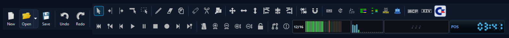
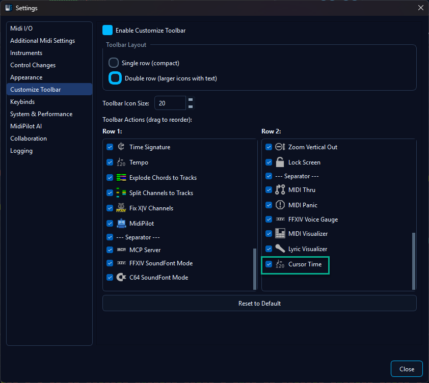
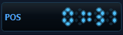

🕒 Cursor Time Display
The Cursor Time Display is a small retro seven-segment clock you can place on the toolbar. While you edit it shows where the cursor sits in the song as a wall-clock time; during playback it runs like a media player's time readout. A left-click cycles what it shows, a right-click recolours it.

The clock on the toolbar.
Where to find it
The clock is a toolbar widget, managed exactly like the MIDI Visualizer: it ships enabled by default, and you add, remove, or reposition it from Settings → Customize Toolbar. Look for Cursor Time in the action list (View category) and drag it wherever you like, on either toolbar row.

Adding or moving the clock via Settings → Customize Toolbar.
Readouts - left-click to cycle
A single left-click steps through five readouts and wraps around, like a
digital wristwatch's mode button. A small tag (POS,
LEN, …) sits beside the digits so the current mode is
always clear.
| Tag | Shows | Example |
|---|---|---|
POS | Cursor position while idle; the live player time during playback | 01:32 |
LEN | Total length of the song | 03:48 |
REM | Remaining time - counts down during playback | -02:16 |
BPM | Tempo in effect at the current position (live across tempo changes) | 120 |
BAR | Musical position: bar.beat plus the time signature | 12.3 4/4 |
Times are shown adaptively: MM:SS for anything under an
hour, widening to H:MM:SS only when a song crosses the
60-minute mark. During playback the colon blinks once a second for that
media-player feel.

Left-click cycles the readout, right-click cycles the colour theme.
Colour themes - right-click to cycle
A right-click on the clock steps through six LED colour palettes, named to echo the app's built-in themes:
- Blue - default
- Amber - classic clock-radio LED
- Green - classic calculator LCD
- Sakura - pink, to match the Cherry Blossom theme
- Mono - high-contrast white on black
- Red
The animation above cycles through every colour theme as well as the readouts.
See also
- Playback - the transport controls the clock follows during playback.
- Tempo Conversion - changing the tempo changes what the
BPMand time readouts show. - Themes & Appearance - the app-wide themes the clock's colour palettes echo.
- Editor & Components - the toolbar and the other toolbar widgets (MIDI Visualizer, Voice Gauge).